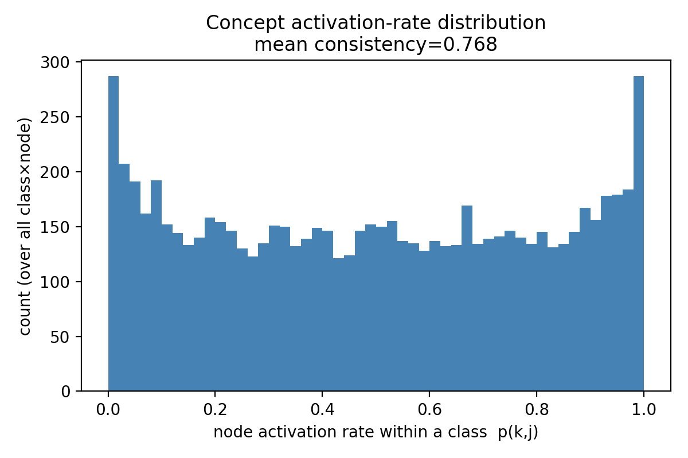
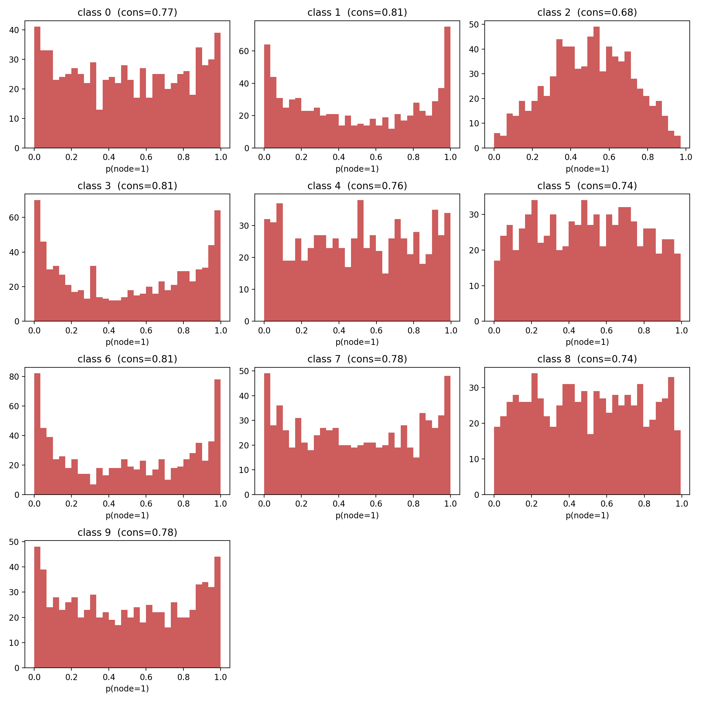
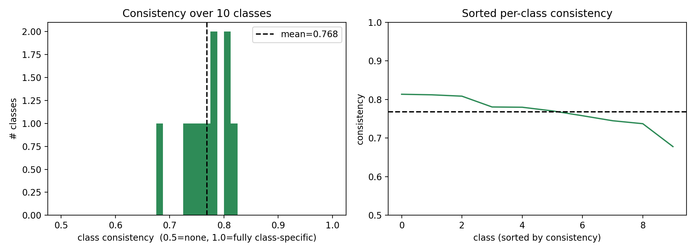
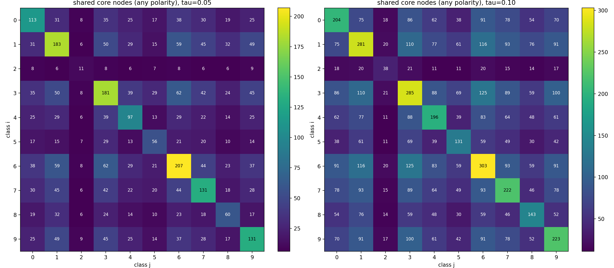
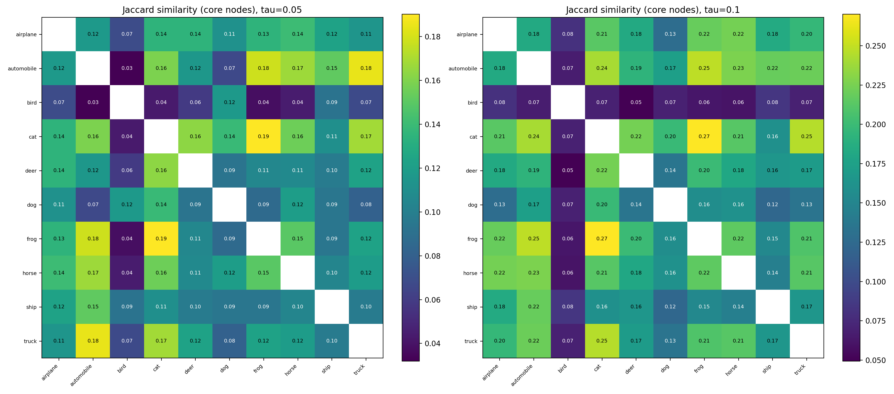

실험1. 같은 클래스의 데이터들은 유사한 노드분포를 가질까
앞서 ICBM은 binary Concept node들을 가진다고 설명하였다. 그러면 이 노드들은 같은 클래스 내의 데이터들에 대하여 유사한 노드 분포를 가질까? 극단적으로 생각해서 같은 클래스의 데이터들이 전부 같은 노드값을 공유한다면 pertubation이 추가된 이미지가 들어왔을 때 Concept node중 바뀐게 있을 때 adversarial attack이 포함된 이미지라고 말할 수 있을 것이다. 이렇게 정확히 같은 노드분포를 갖지는 못하겠지만 클래스별로 어느정도의 노드값들을 공유하는지 확인해보고자 한다.
데이터셋은 클래스가 적고 클래스 내의 데이터 수는 충분한 CIFAR10 데이터셋을 사용하고자 한다. ImageNET pretrained VIT backbone을 가져왔고 HTAF와 Clf Head를 붙여서 Concept bottleneck 모델을 구축하였다. 이후 end to end로 CIFAR10 데이터셋을 통해서 finetuning 해주었다. 모델 자체의 분류 성능은 가장 높게 학습되었던 epoch에서 98.7% 정도로 분류기로서의 성능은 충분한 것으로 확인되었다.
클래스 내에서의 데이터들의 노드값 공유를 확인하기 위해서 확인한 것은 두 가지이다.
먼저 몇 가지 notation을 정의하면:
- : 클래스 에 속한 데이터 개수
- : concept 노드 개수 (concept layer의 차원)
- : 번째 데이터의 번째 노드 값
- : 번째 노드의 binary 값을 나타내는 확률변수
- : 클래스 내에서 노드 가 1을 갖는 데이터의 비율
1. 노드 활성화 비율 히스토그램
X축 : 번째 노드에 대하여
(모든 데이터가 특정 노드에서 1의 값을 공통으로 갖는다면 X축의 값은 1이 된다)
Y축 : 해당 값을 갖는 노드의 개수
위와 같은 그래프를 클래스별로 확인하고자 한다.
2. Consistency
각 노드가 0 또는 1 중 한쪽으로 쏠린 정도를 모든 노드에 대해 평균낸 값이다. 클래스 내 데이터가 노드값을 완전히 공유하면 1, 반반으로 갈리면 최소값 0.5가 된다.
위 실험에서 클래스내 데이터들의 노드공유를 검증하려면, 히스토그램이 U자형으로 관측되어야 하며, Consistency는 1에 가까운 값을 가져야 할 것이다.
실험 결과
(1) 전체 분포

모든 클래스·노드를 합친 분포는 양 끝(0, 1)에 봉우리가 있는 약한 U자형이다. 클래스 내에서 항상 켜지거나 항상 꺼지는 노드가 존재하지만, 가운데(0.3~0.7) 구간도 두껍게 차 있어 데이터마다 값이 갈리는 노드도 그만큼 많다. 전체 평균 consistency는 0.768 로, 완전 공유(1.0)와 무작위(0.5)의 중간 수준이다.
(2) 클래스별 분포

클래스마다 편차가 있다. class 1,3,6은 뚜렷한 U자형(consistency=0.81)으로 노드 공유가 강하고, class 2는 0.5 근처에 몰린 종 모양(consistency=0.68)으로 노드값이 거의 데이터별 동전던지기에 가깝다. 나머지(class 4,5,8 등)는 비교적 평평한 형태이다.
(3) 클래스별 consistency

10개 클래스의 consistency는 0.68~0.81의 좁은 범위에 모여 있고 평균은 0.768이다.
결과 해석
가설(U자형 + consistency≈1)은 부분적으로만 성립했다. 노드를 공유하는 클래스(특히 1·3·6)가 분명히 있지만, 전체적으로는 공유 노드와 비공유 노드가 섞인 중간 상태였고 거의 완전히 공유한다는 강한 형태는 아니었다.
adv attack 검출로 이으려면, 모든 노드를 보는 대신 클래스별로 이 0 또는 1에 충분히 가까운 핵심 노드만 추려서 그 부분집합 노드들의 변화를 신호로 쓰는 편이 나아 보인다. 가운데 영역의 불안정 노드를 그대로 쓰면 perturbation 없이도 값이 갈려 의미있는 검출을 해내지 못할 가능성이 높다.
실험 2. 클래스 간에 공유하는 핵심 노드가 있을까?
실험 1에서 10개 클래스 모두 완전한 U자형을 띠지는 않았지만, class 2를 제외하면 활성화 비율이 0 또는 1에 가까운 노드가 클래스마다 수십개 이상(전체 개 중) 존재하는 것을 확인할 수 있었다.
이렇게 클래스 내에서 값이 거의 고정된 노드를 묶어 핵심노드 집합으로 정의하자. 허용 오차 (0에 가까운 작은 값, 예: 0.05, 0.1)에 대하여, 클래스 의 핵심노드 집합 를 다음과 같이 정의한다.
여기서 은 클래스 안에서의 활성화 비율(실험 1의 )이다. 즉 클래스 의 데이터 중 이상(또는 이하)이 같은 값으로 고정된, 켜짐·꺼짐 한쪽으로 거의 확정된 노드들의 집합이며, 그 원소 를 핵심노드라 부른다. 가 작을수록 기준이 엄격해진다. 예를 들어 이면 클래스 데이터의 90% 이상(또는 10% 이하)이 같은 값을 갖는 노드만 핵심노드가 된다.
위 실험에서 확인하고자 하는 것은 다음과 같다.
1. 각 클래스의 핵심노드의 개수는?
정의에 따라 각 클래스의 핵심노드 수 를 두 기준으로 세어보면 다음과 같다.
| class | 이름 | 핵심노드 수 (=0.05 / 0.1) |
|---|---|---|
| 0 | airplane (비행기) | 113 / 204 |
| 1 | automobile (자동차) | 183 / 281 |
| 2 | bird (새) | 11 / 38 (최소) |
| 3 | cat (고양이) | 181 / 285 |
| 4 | deer (사슴) | 97 / 196 |
| 5 | dog (개) | 56 / 131 |
| 6 | frog (개구리) | 207 / 303 (최다) |
| 7 | horse (말) | 131 / 222 |
| 8 | ship (배) | 60 / 143 |
| 9 | truck (트럭) | 131 / 223 |
클래스마다 핵심노드 수의 편차가 크다. class 2(새)가 11/38개로 가장 적은데, 이는 실험 1에서 class 2의 consistency(0.68)가 가장 낮았던 결과와 일치한다. 반대로 class 6(개구리)은 207/303개로 가장 많다. 추후에 이러한 결과가 발생하는 이유가 무엇일지, test bird data들이 어떠한 특성을 가졌기에 공유노드가 적은지도 확인하면 좋을 듯 하다.
2. 클래스간 공유하는 핵심노드들의 개수는? 유사한 클래스끼리 공유하는 핵심노드가 있다면, 그 노드는 의미가 있는 노드라고 생각해볼 수 있다. 오히려 반대로 유사하지 않은 클래스끼리 공유하는 핵심노드가 있다면 ‘그 노드는 무슨 이유로 공통의 핵심노드로서 작동하는 것일까’ 라는 질문을 던져볼 수 있껬다.

위 히트맵은 두 클래스가 공유하는 핵심노드의 개수다. 다만 절대 개수는 각 클래스의 핵심노드 수에 좌우되므로(핵심노드가 많은 클래스끼리는 그냥 많이 겹친다), 집합 크기로 정규화한 Jaccard 유사도로 다시 본다.

정규화한 jaccard similarity plot을 보았을때, 가장 많은 비율로 공유하는 것은 (frog/cat) 조합이다. 반대로 가장 낮은 비율은 (bird/deer) 에서 나타난다. 다만 전반적으로 Jaccard가 최대 0.3 미만으로 낮아, 클래스 간 핵심노드 공유나 뚜렷한 의미적 군집은 약한 것으로 보인다.
마무리
여기까지는 학습된 ICBM이 어떤 concept node 구조를 갖는지 살펴보는 EDA 수준의 분석이었다. 정리해보면:
- 실험 1: binary concept node는 클래스 안에서 부분적으로만 공유된다 (평균 consistency 0.768, 약한 U자형). 완전히 공유되지도 무작위이지도 않은 중간 상태다.
- 실험 2: 클래스마다 값이 거의 고정된 핵심노드 집합이 존재한다. 다만 그 크기는 클래스별 편차가 크고( 기준 11~207개), 클래스 간 공유는 낮다(Jaccard < 0.3). 그래도 cat/frog처럼 비교적 겹치는 쌍과 bird처럼 거의 겹치지 않는 클래스가 있어 약하게나마 클래스 특성이 반영된 것으로 보인다.
종합하면 ‘클래스를 특징짓는 안정적인 노드가 일부 존재한다’는 점은 확인되었고, 이는 adv attack 검출이라는 원래 목적의 전제 조건이기도 하다. 다만 그 노드들이 perturbation에 실제로 어떻게 반응하는지는 아직 보지 않았다.
다음 글에서는 이 adversarial attack과 관련한 ICBM 모델의 robustness, 그리고 노드들의 변화에 대해서 확인해보고자 한다.